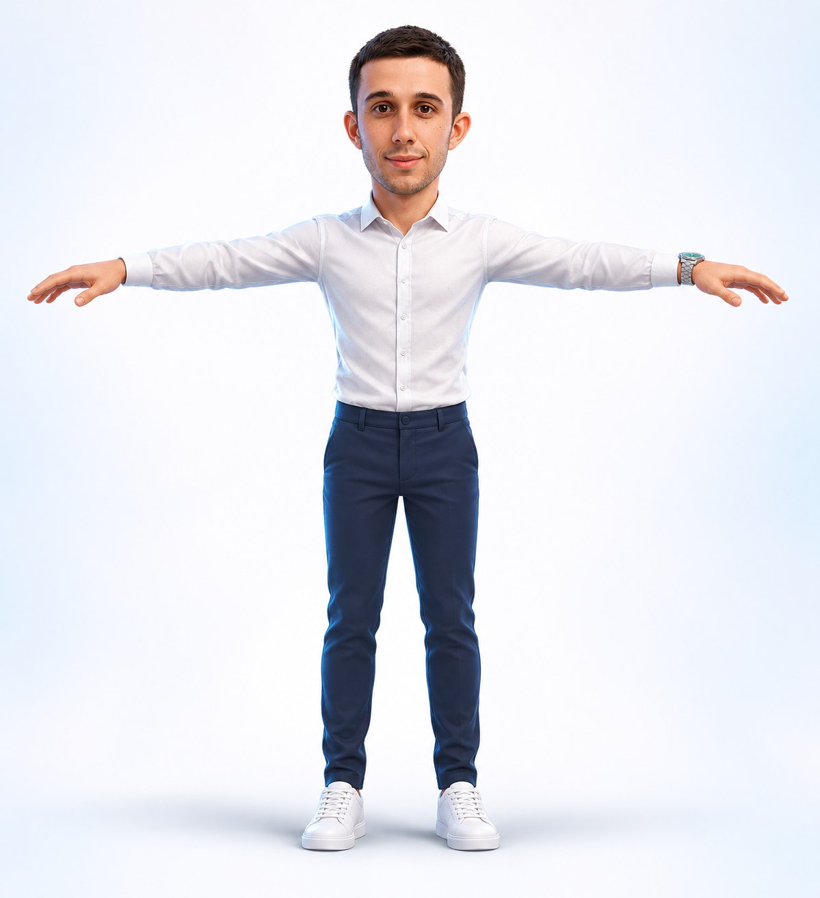

PERSONE. IDEE. POSSIBILITÀ.
Ogni prospettiva,
un nuovo inizio.
Benvenuto nel mio spazio digitale.
GL / 01 — UNO SPAZIO DA ESPLORARE

000°
900°
Avatar di riferimento · vista frontale
IL TUO PUNTO DI PARTENZA
Una persona. Cinque prospettive.
Scegli una direzione e comincia a esplorare.